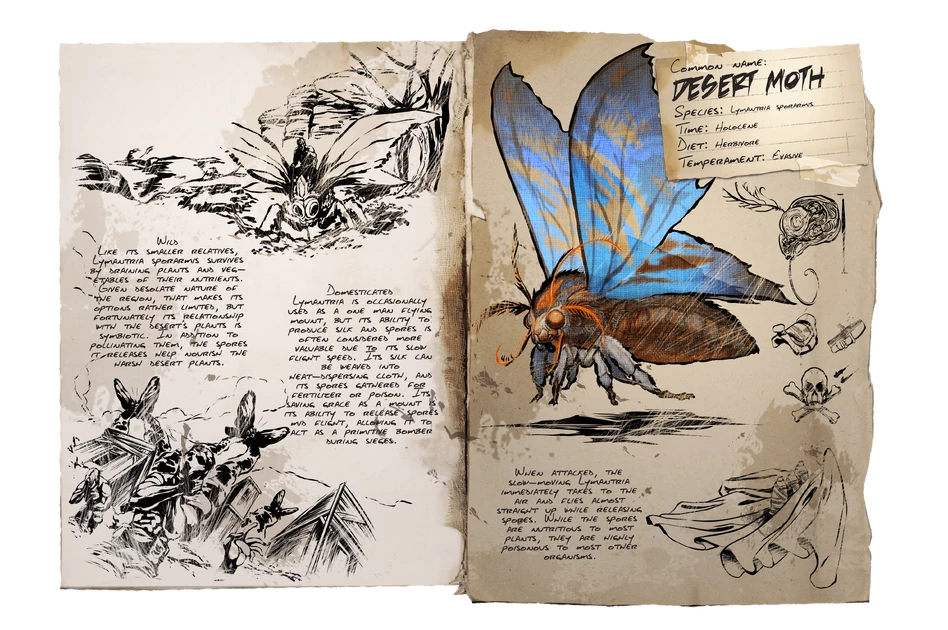

Primera aparición: Temporada 6 - capítulo 5
Tamaño (adulto): Longitud - 5 metros, Altura - 2,5 metros
Hábitat: THE ISLAND, THE CENTER, SCORCHED, RAGNAROK, LA TIERRA, GENESIS
Dieta: Herbívora
Comportamiento: Pasivo
Nivel de amenaza: Ninguna
Nivel de pelea: 160